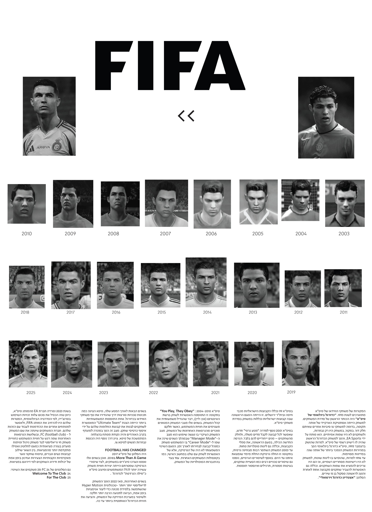
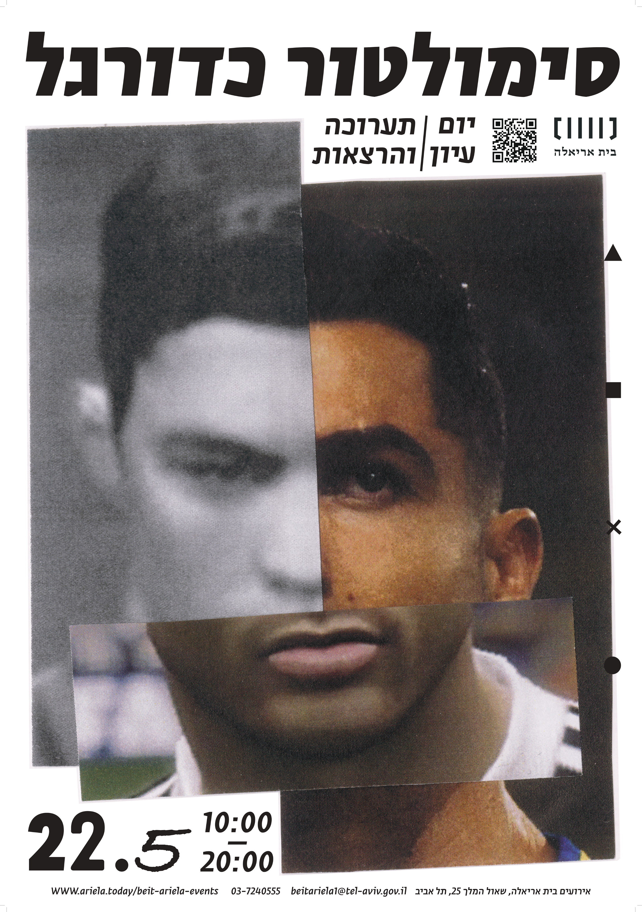
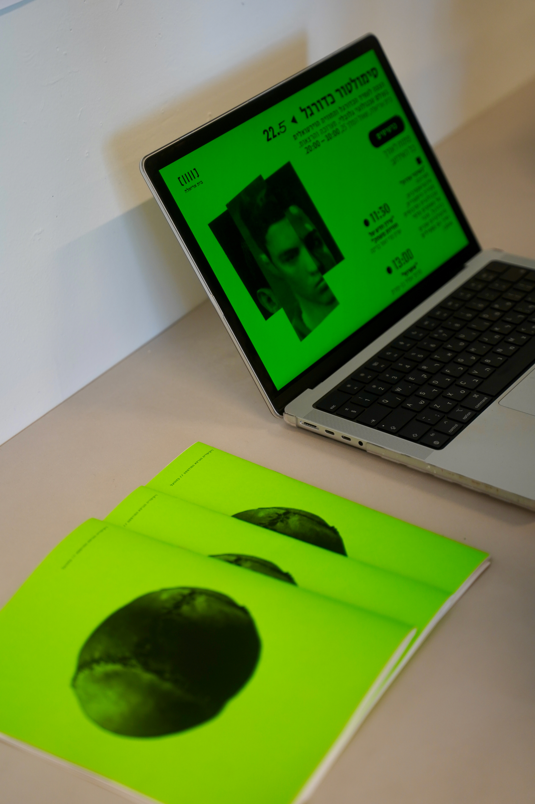

WIKIPEDIA>F00TBALL

Exploring the Evolution of the Game, from Its Origins to Digital Simulations and Beyond
A project based on the "Football" Wikipedia article, combining visual and textual research.
The work features a printed edition of the Wikipedia entry, as well as a poster and
a one-page website designed for a conceptual event inspired by the research.
In this project, I focused on the history of football and the diverse range of simulation games based on the sport. The research explores their evolution and refinement over the years, highlighting the contrast between the old and the new, while speculating on what the future holds.
Developed within a Graphic-Typographic Design course at Bezalel Academy of Arts and Design.

1 > Wikipedia>Football : the print addition.
2 > Magazine unfolded poster presenting the evolution of CR7 face graphics in FIFA games throw the years.


1 > The website contains the program of the event, info about the content and place to buy tickets.
2 > The website & Magazine
